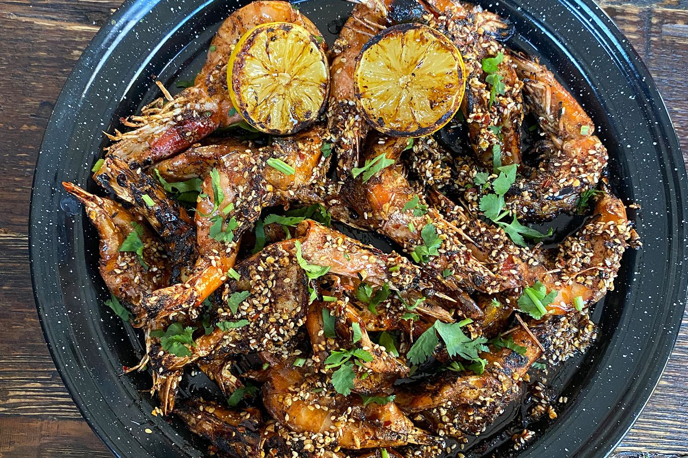

Camarones al veneno

Ingredients
- 500gr camaròn grande con cabeza
- 3 cucharas cajun bastardo o sal y pimienta
- 1 barra de mantequilla
- 15 chiles de arbol
- 6 dientes de ajo
- 1/4 taza de aceite vegetal
- 1/4 cebolla morada
- 2 limonnes
- cilantro
- sal y pimienta
Preparacion
- Abre los camarones del lomo sin retirarle la cascara ni la cabeza. pon un poco de aceite y Sazona con cajún bastardo o con sal y pimienta pues
- En un molcajete o procesador muele 3 dientes de ajo con el chile de árbol, agrega sal, pimienta y aceite
- Coloca los camarones en la parrilla del asador a fuego directo hasta que queden dorados, cuidando de no quemarlos
- En un sartén de hierro agrega la cebolla y 3 ajos finamente picados junto con la mantequilla y poco de aceite, cuando la cebolla y el ajo estén suaves, agrega la pasta de chile con ajo que hiciste en el molcajete
- Pasa los camarones por el sartén para que se impregnen del veneno
- Retira del fuego ya agrega los 2 limones y un poco de cilantro
Return